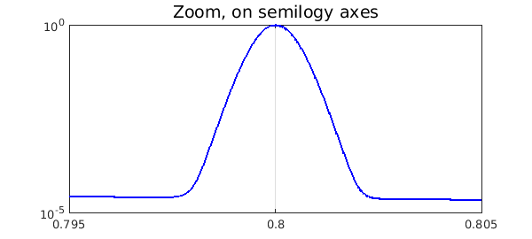

We demonstrate the adaptive capabilities of Chebfun by integrating the 'spike function'
f = @(x) sech(10*(x-0.2)).^2 + sech(100*(x-0.4)).^4 + ...
sech(1000*(x-0.6)).^6 + sech(1000*(x-0.8)).^8;
(which appears as F21F in [1]) over $[0 1]$.
We create a Chebfun representation and plot the function, increasing 'minsamples' so that the spikes are not missed by an overly coarse initial sample:
ff = chebfun(f,[0 1], 'splitting','on','minsamples',129);
LW = 'linewidth';
plot(ff,'b',LW,1.6,'numpts',1e4), grid on
title('Spike function','FontSize',14)

Here is a confirmation that even the narrowest spike is well resolved:
semilogy(ff,'b','interval',[.795,.805],LW,1.6), grid on
title('Zoom, on semilogy axes','FontSize',14)

Now we compute the integral. In order to estimate the time for this computation, we create the chebfun again without plotting it.
tic ff = chebfun(f,[0 1], 'splitting','on','minsamples',129); sum(ff)
ans = 0.211717021214835
Time for creating this chebfun and integrating it:
toc
Elapsed time is 0.451306 seconds.
References:
[1] D. K. Kahaner, "Comparison of numerical quadrature formulas", in J. R. Rice, ed., Mathematical Software, Academic Press, 1971, 229-259.